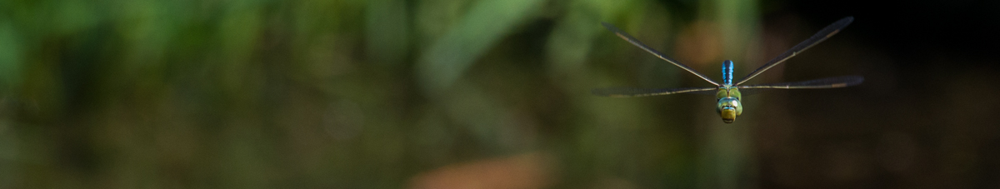
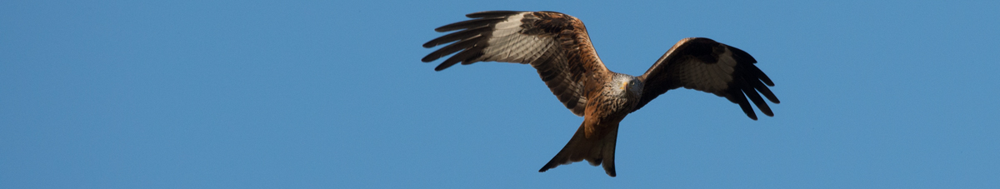
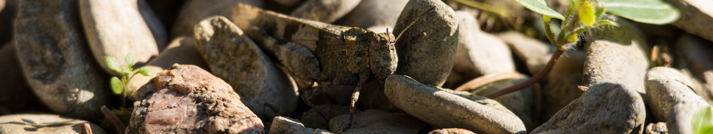
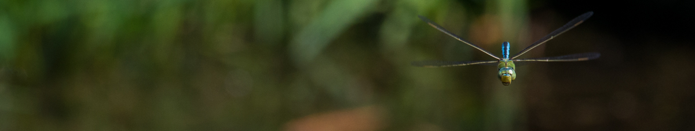
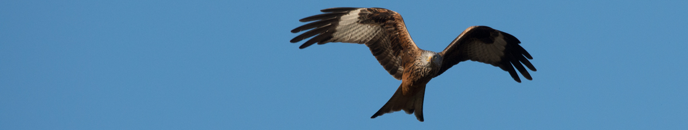
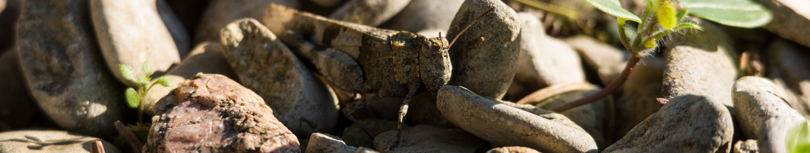

Dernière mise à jour le 26 janvier 2020
Bienvenue sur le site naturaliste des moines de Flavigny !
Sur "Ornitho - Voir le parc autrement", vous pourrez :
… apprendre à identifier les animaux du parc et d'ailleurs.
… parcourir une splendide galerie de photos gracieusement mise à notre disposition par le Fr. Romain
(ici en posture d'affût).
… louer le Créateur pour les beautés de la création.
Avec "Ornitho - Voir le parc autrement", vous ne direz plus le chapelet comme avant !